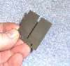
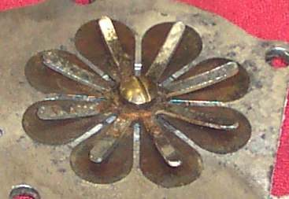
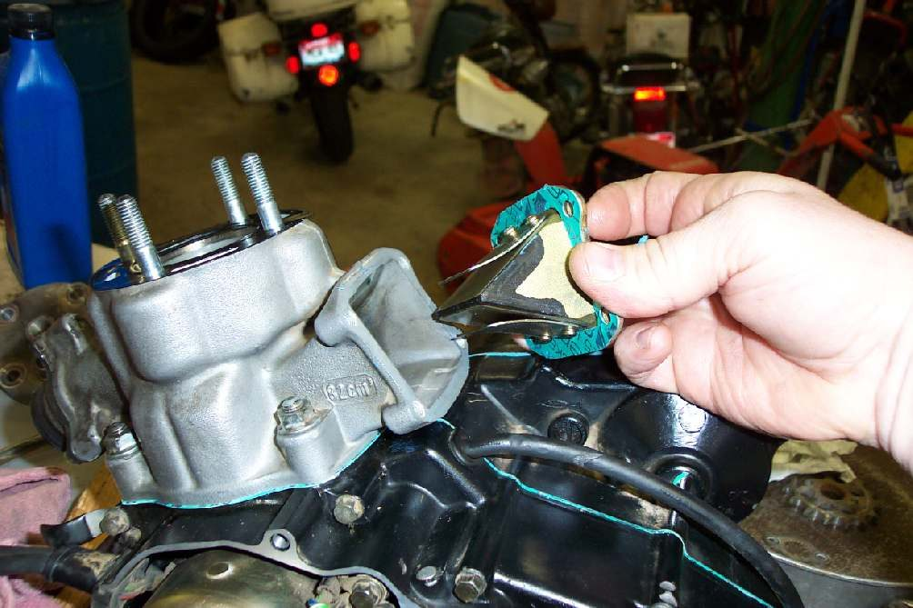

A reed valve is a one-way valve in the intake of many two-stroke engines. It opens to let fuel mixture in and shuts so the mixture cannot be pushed back out of the carburettor when the piston goes down. This lets the engine use bigger ports.
What it does
It is a block (the cage) with thin flexible petals. Suction opens the petals, and they spring shut when pressure rises. A curved stop plate limits how far they can open, to stop them bending too far and breaking. Motorcycle reed valves usually have four or six petals, and from one to eight exist. Stock petals are usually steel. Plastic and other materials are used on some high-performance sets.
Some four-stroke engines, such as the 1982 Honda XR500, have one to improve carburation. Thin rubber reeds also appear inside some fuel pumps and carburettors.
Signs it is worn or failing
- Very hard to start, or will not start: see Two-stroke is hard to start or weak at low revs.
- Fuel mist spitting from the carburettor.
- Petal chipped, cracked, bent or stuck.
When to replace it
Replace the set if any petal is broken, bent or does not seal. Replace the stop if it is bent or loose. See Check a reed valve and its petals.
What to match when buying
- Exact reed block for your engine, with the number of petals and the cage shape.
- Matching gasket.
- Buy a complete set, not single petals, if the reeds are worn.